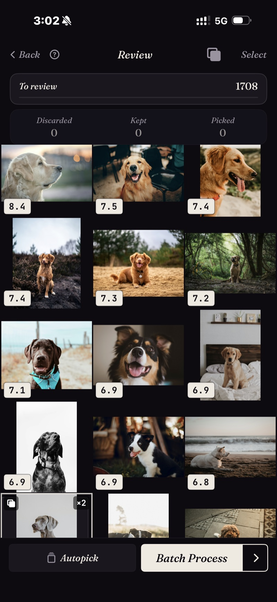
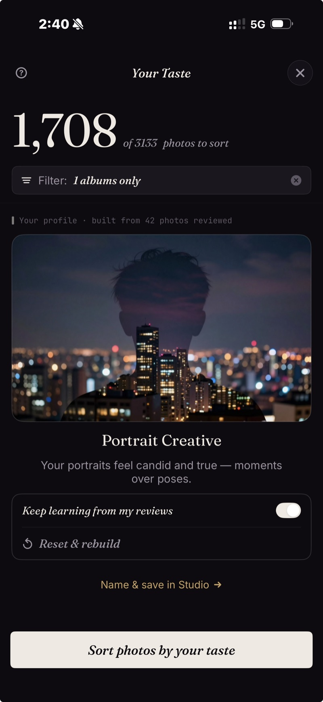
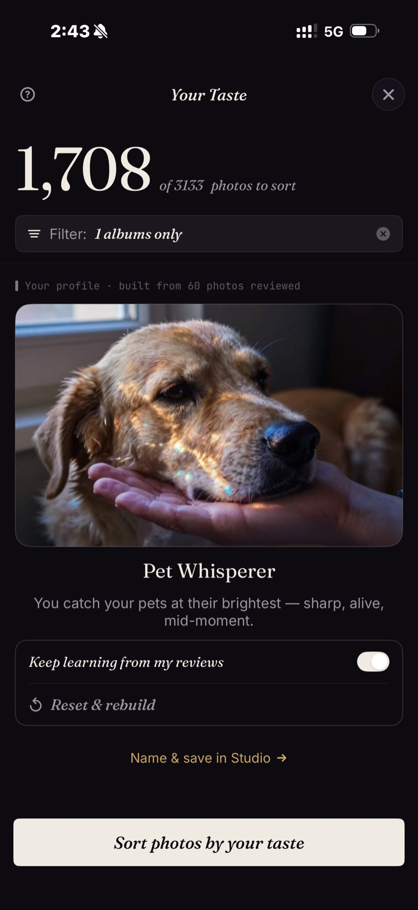
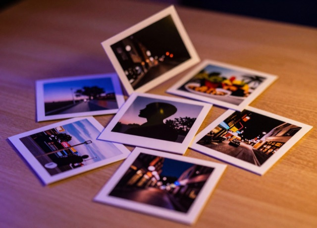

Find your best photos. However you look for them.
Every camera roll hides the photos you actually want — your best shots, a favorite subject, the ones only you would pick. SpectraSort surfaces them and learns your eye as it goes, on one fast engine that runs entirely on your iPhone. Nothing is uploaded.

One powerful engine. Three ways to use it.
Every photo in your library gets scored on-device against what you care about. The three tabs are just three ways to point that engine — you never have to learn all of them to start.
Discovery tools
One tap for the photos you're after — your own taste, your best shots, a subject, a look-alike, the duplicates, or a place.
- Your Taste
- Best Shots
- Find a Subject
- Like This Photo
- Dedupe
- Photos of a location
Your library, gathered
Face a big library one piece at a time — Scenes gather your trips, themes, and series on their own, and a Timeline takes you year to month to day.
- Scenes
- Timeline
- Sort any slice
Taste & fine-tuning
Take the controls: seven quality axes, a weight wheel that splits subject against quality, up to three subjects at once, and profiles you can save and switch.
- Quality focus
- Weight wheel
- Profiles
Pick a job. Get your photos.
However you start, the shape is the same: the engine scores your photos, the best rise to the top with look-alikes stacked, and you swipe through the result — right to pick the winners, down to keep, left to let go.


Inside a stack, roll the Similar wheel through the look-alikes without leaving the photo. When you're done, Batch Process finishes the job: picked photos go to an album or the share sheet, discards to delete — and kept photos stay in your library, untouched. Nothing is applied until you tap an action, and every action is free.
It learns what you like.
Keep using the app and a personal profile quietly takes shape — assembled from the photos you keep and the ones you let go. It sorts by your own preferences, and it never leaves your phone.



A profile that's yours alone
There's nothing to set up. About 30 picks in, SpectraSort has noticed what you reach for — the subjects, the look, the balance of technical and artistic — and built a profile around it, all on-device. It even names what it sees: Nature Explorer, Portrait Creative, Pet Whisperer.
Use it as a one-tap sort from the Toolbox, shape it further in Studio, or reset and rebuild it whenever your eye changes. No account, no cloud, no server-side learning.

Every learned profile wears artwork matched to what it sees in your picks — four of the thirty-one.
Index once. Sort in a blink.
The first sort does the heavy lifting — your photos are indexed on Apple's Neural Engine, one time. Every sort after runs on that index and lands nearly instantly. And through all of it: no account, no internet, nothing collected from your photos.

Sorting is free. So is keeping your results.
Save, share, and delete are free for everyone — no limit. Sorting is free up to five times a week; go unlimited once, for good.
- Up to 5 sorts a week
- Every Toolbox tool & Discover
- Save, share & delete — unlimited
- Unlimited sorts
- Studio — full manual control
- One payment, yours for life
The limit is on sorts, not actions: running the engine on a set of photos uses one of your five weekly sorts, while saving, sharing, and deleting your results are always free. One $19.99 payment removes the limit for good. Built by an indie dev who uses it daily.
Common questions.
Do my photos ever leave my phone?
No. Every step — finding, sorting, scoring, organizing, and your Taste profile — runs on your iPhone's Neural Engine. There are no uploads, and there is no SpectraSort server in the path.
What are the three tabs — Toolbox, Discover, Studio?
Three ways to use the same engine. Toolbox is one-tap tools for finding photos — your own taste, your best shots, a subject, a look-alike, duplicates, or a place. Discover lets you face the library one piece at a time: Scenes gather your trips, themes and series on their own, and a Timeline takes you year to month to day. Studio is where you fine-tune how photos are ranked and manage your profiles.
You never have to learn all three to get started — pick a Toolbox tool and go.
How much does it cost?
Sorting is free — up to five sorts a week. A one-time $19.99 purchase removes the weekly limit for good, with no subscription. Saving, sharing, and deleting your results are free for everyone, with no limit.
I bought Premium before — do I pay again?
No. Premium is tied to your Apple account, so an earlier purchase carries over automatically and you stay unlimited. If it doesn't show up on a new phone, tap Restore Purchases in Settings.
How fast is it?
The first sort builds an on-device index of your photos — that's the one slow step, and it only happens once (the app shows its progress photo by photo). Every sort after runs on the index and finishes nearly instantly, even across thousands of photos.
What is the Your Taste profile?
A personal profile that takes shape as you use the app, built from the photos you keep and the ones you let go — all on your device. Once it has learned enough, it sorts by your own preferences. You can shape it in Studio, or reset and rebuild it any time. It never leaves your phone — no account, no cloud sync, no server-side learning.
Will SpectraSort delete my photos?
Only when you tell it to. Sorting and reviewing never touch your library — discarding a photo just removes it from the current sort. Deleting is an explicit action you take on your results, and it always goes through the system Photos confirmation dialog.
How is this different from Apple Photos or Google Photos?
Apple Photos and Google Photos are built for browsing and search across your full library. SpectraSort is built for picking and clearing — ranking your photos against your taste so you can surface the keepers and clear the clutter from thousands of similar shots. It's also 100% local: unlike iCloud or Google Photos, nothing about your library leaves the phone.
What devices does it run on?
iPhone with iOS 18.5 or later. The engine runs on Apple's Neural Engine, so newer iPhones index noticeably faster.
Your best photos are already in there.
Free to try. iPhone, iOS 18.5 or later.
Download on the App Store